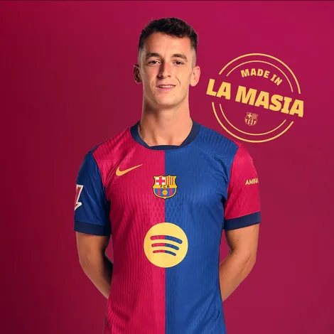

First Team
ü•Ö
Goalkeapers

Marc-André ter Stegen

Iñaki Peña

Wojciech Szczęsny
üõ°Ô∏è
Defenders

Ronald Araújo

Jules Koundé

Pau Cubarsí

Íñigo Martínez

Andreas Christensen

Alejandro Balde

Eric Garcia
⚽
Midfielders

Pedri

Gavi

Frenkie de Jong

Pablo Torre

Marc Casadó

Dani Olmo

Fermin López
‚ö°
Forwards

Robert Lewandowski

Raphinha

Lamine Yamal

Ansu Fati

Ferran Torres

Pau Víctor
üëî
Coaching Staff

Hansi Flick